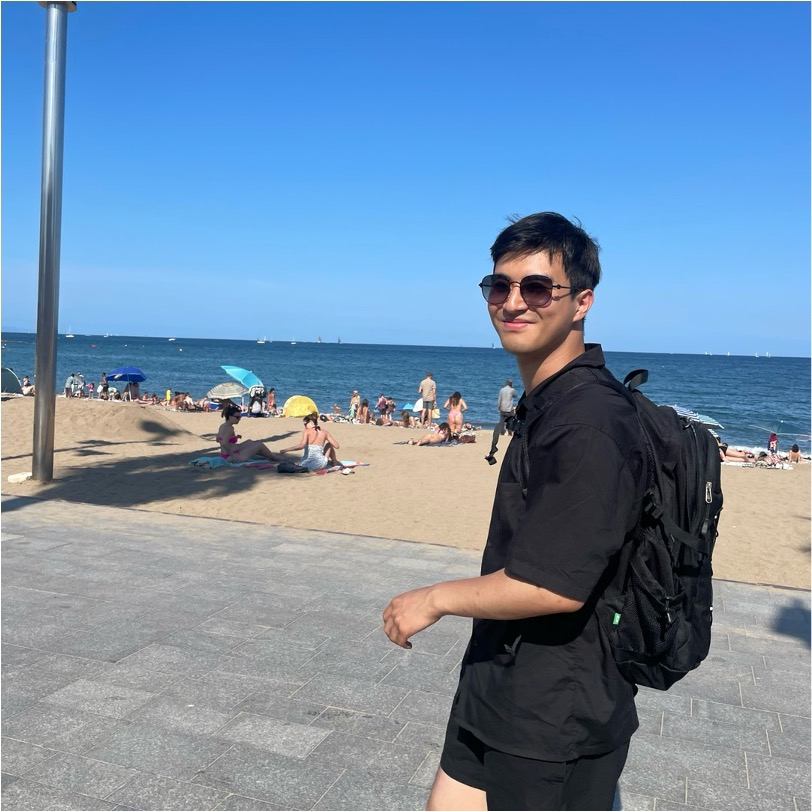

SERF: Spatiotemporal Environment and Robot Feature Map for Long-Horizon Mobile Manipulation
IEEE ICRA 2026 Workshop on Multi-Modal Spatial AI (Best Paper Award)

Hi! My name is Sunghwan Kimpronounced "Sung-Hwahn" (su as in "sun"). I also go by Shawn. I am a Ph.D. student in the Department of Electrical and Computer Engineering at UC San Diego, where I work with the Existential Robotics Laboratory. I'm fortunate to be advised by Prof. Nikolay Atanasov. I'm also closely working with Prof. Yulun Tian at University of Michigan.
Previously, I was a research officer at the Agency for Defense Development (ADD), the South Korean counterpart to the U.S. DARPA. I received my B.S. in Electrical Engineering and Mathematics (double major) at KAIST.
My research goal is to enable mobile robots to autonomously perform complex, long-horizon tasks that require both navigation and physical interaction in large-scale, unstructured environments. To this end, I aim to develop structured representations of the physical world and leverage them for task execution and planning. In particular, I am currently exploring how 3D maps can support long-horizon reasoning in visuomotor policies. My research is centered on neural scene representations, simultaneous localization and mapping (SLAM), and robot policy learning (e.g., VLA and model-based RL).
* indicates equal contribution.